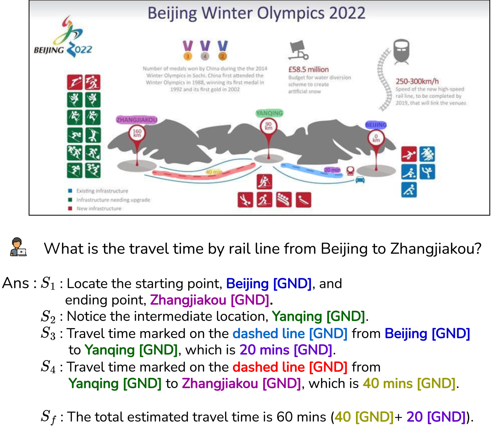

Hello — I’m
Sai Madhusudan Gunda
MS student with Prof. Ravi Kiran Sarvadevabhatla · CVIT, IIIT Hyderabad
I work on teaching models to read, ground, and reason over complex documents — from modern PDFs to centuries-old palm-leaf manuscripts in low-resource Indic scripts.
saimadhusudan.github.io
DoCoG
Mask-based Multi-Type Grounded Chain-of-Thought for Document QA
Sai Madhusudan Gunda* · Jyothi Swaroopa Jinka* · Hrithik Sagar Rachakonda* · Aryan Jain† · Venkata Kesav Venna† · Anirudh Srinivasan · Ravi Kiran Sarvadevabhatla
*, † equal contribution · IIIT Hyderabad · BharatGen · docog-eccv.github.io
An answer you can't point to is an answer you can't trust
Grounded QA: every claimed value is linked to the exact pixels it came from.
Verify at a glance
Highlighted evidence turns fact-checking into one look.
Audit & cite
Healthcare, legal, finance need a trail from output to page.
Act on regions
Redaction, extraction, agents — all need where, not just what.
Promptable segmentation — the prompt need not be human
This grounds one answer (F1 79.0 vs Gemini-2.5-Pro 43.4 · +63 ms). But an answer is the end of a chain of reasoning…
The answer is grounded — the reasoning isn't
Evidence no box could express — step through it
Watch the forward pass — tokens flow through GIM into masks
Training in two stages: SFT → DPO
Stage 1 is plain supervised fine-tuning, end-to-end (VLM + GIM + mask decoder):
cross-entropy on the text · Dice + BCE on every predicted evidence mask.
The DPO formula — every term is text
π(y | I, q) is a text likelihood
y is the chain, as tokens — π is the LM head's probability of writing it. θ = tuned · ref = frozen SFT copy · β = push strength.
So only the VLM can move
Every π comes from the LM head → gradients reach only the 🔥 VLM. GIM + segmenter appear nowhere in the formula → ❄ frozen.
Why no mask term?
A preference needs a likelihood — a mask has none: the decoder emits one mask, not a distribution. Ill-posed, so left out.
DPO on text only — and the drift trap
What DPO does here
From each preference pair, DPO pushes the VLM to make the chosen ✓ chain more likely than the rejected ✗ one, against a frozen reference. Only the VLM's weights change — mask preferences are ill-posed, so GIM + segmenter stay frozen.
The fix — anchor loss
𝓛anchor = (1/K) Σk ‖Gkθ − Gkref‖²
A moving VLM drags the [GND] states with it — this keeps them where the frozen GIM + segmenter expect them.
DoCoG-QA: 325K docs · 1.5M QA — multi-type by construction
Composition (source documents)
The engine cites element IDs, never coordinates. Verified: gpt-oss-120B judge (a different family, on purpose) · ROSCOE · 33,500 masks checked by hand.
Eval twin: DoCoG-Bench — 3K images · 10K QA · two-stage human verification.

DoCoG-PQA: 20K pairs — one format check, three scores
FR · format — must pass first
Do steps, answer, and [GND] references all parse? Fail ⇒ rejected before scoring.
AQ · answer
Matches ground truth — after normalization + numeric tolerance. Rule-based, no LLM judge.
CQ · chain
ROSCOE check (below threshold ⇒ 0), then bipartite step matching (E5 similarity) → step-level F1.
GQ · grounding
A mask counts iff IoU ≥ 0.5 + same element type + right step. All steps + answer = GQall · answer only = GQfa · GQ = mean.
✓ chosen
highest total reward — right answer and faithful grounding
✗ rejected
lowest total — a right answer can still lose on weak grounding
Same yardstick at test time: DoCoG-Bench reports exactly these metrics (deterministic, + one G-Eval) — the numbers on the next slides.
Frontier models answer — they can't show
DoCoG-Bench (All): answer quality vs final-answer grounding
Per domain (AQ / GQfa)
charts 83.5 / 80.3 · flowcharts 82.2 / 79.2 · docs 89.7 / 85.4 · tables 87.8 / 82.7
General QA intact
ChartQA 92.7 · ChartBench 79.4 · FlowVQA 85.5 · MISS-QA 78.4 · TabFact 89.4 · DocVQA 93.4

DoCoG is accepted at ECCV 2026 ORAL
Thank you — questions?

BharatGen · IIIT Hyderabad